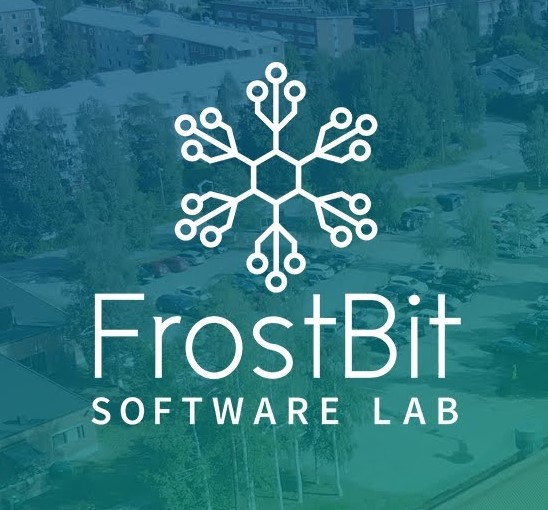
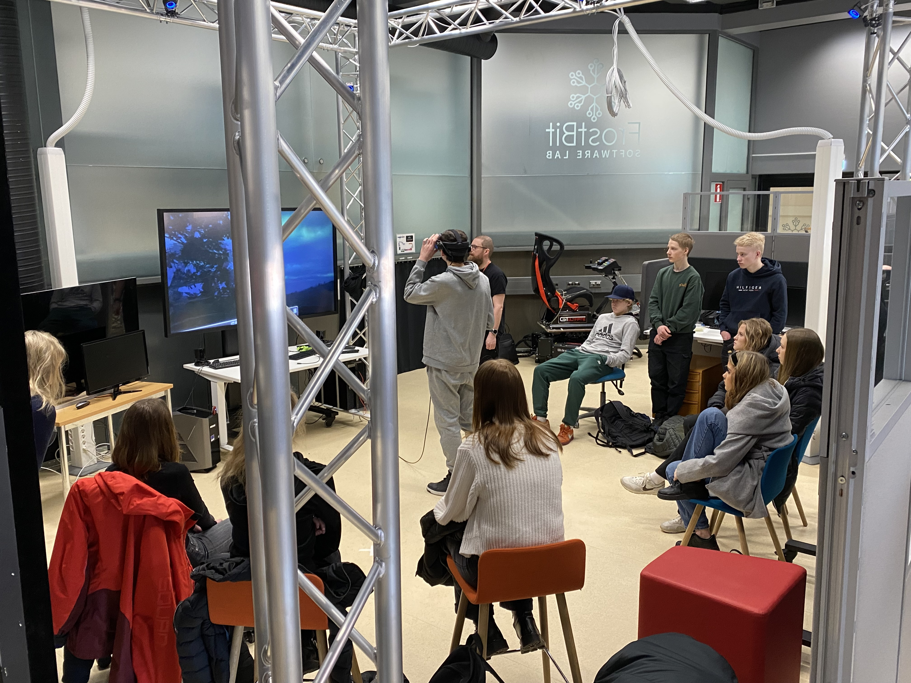

Mijn hoofddoel lag tijdens mijn stage bij de ontwikkeling van de "VR Speech Simulation Game" binnen de Unreal Engine. Mijn persoonlijke doel was om beter te kunnen samen werken met een internationaal team.
Tijdens mijn stage bij FrostBit Software Lab, gevestigd aan de Universiteit voor Toegepaste Wetenschappen in Rovaniemi, Finland, was ik nauw betrokken bij de ontwikkeling van de "VR Speech Simulation Game" binnen de Unreal Game Engine. Dit innovatieve project was specifiek gericht op het creëren van een nieuwe onderwijs- en leermethode voor studenten in het hoger onderwijs, met als voornaamste doel het versterken van de taalvaardigheden van studenten.
In de VR-spraaksimulatie selecteren leerlingen eerst hun moedertaal en vervolgens de taal die ze willen leren, waarna ze kunnen kiezen uit verschillende scenario's, zoals het vragen naar de weg, een vakantiebaantje zoeken en een zieke vriend bezoeken. Gedurende het spel voeren leerlingen gesprekken met virtuele personages en vullen ze ontbrekende dialogen in door opties te selecteren.
Tijdens mijn betrokkenheid bij dit project heb ik meegewerkt aan de ontwikkeling van een uitgebreid scoresysteem dat de leerervaring verrijkt en de motivatie van studenten bevordert. Belangrijke functies die zijn geïmplementeerd omvatten:
Totale Score: Het scoresysteem is ontworpen om studenten na afronding van elk scenario een percentagescore en totale sterrenscore te geven. Deze geeft niet alleen hun prestaties en beheersing van de inhoud weer, maar ook waardevolle feedback om verbetering te stimuleren en groei te bevorderen.
Opslaan, Laden en Resetten: Verbeteringen aan de game-ervaring omvatten opties om de voortgang op te slaan, eerder geladen statussen te herstellen en scenario's te resetten voor een vloeiende spelervaring.
Sterrenbeoordelingssysteem en Totale Sterrenscore: Studenten kunnen tot 3 sterren verdienen voor elk antwoord binnen een scenario, wat hen motiveert om nauwkeurigheid en vooruitgang na te streven.
Scorebord en Leaderboards: Aan het einde van elk scenario worden scores en sterren weergegeven op het scorebord. Dit displayt de prestaties van studenten en het benadrukt ook de gebieden die verbeterd moeten worden. Daarnaast bevordert het leaderbord een gevoel van competitie en betrokkenheid.
Invoer van Spelersnaam: Studenten kunnen hun naam invoeren zodat ze op het scorebord verschijnen en prestaties kunnen delen met klasgenoten, waardoor een stimulerende klasomgeving wordt gecreëerd.
Tutorial: Om de spelervaring te optimaliseren en ervoor te zorgen dat studenten het spel soepel kunnen doorlopen, zal een uitgebreid tutorial worden geïntegreerd in de gameplay. Deze tutorial biedt een gestructureerde en gebruiksvriendelijke rondleiding door de game mechanics en het spel verloop, zodat spelers effectief kunnen vorderen en hun leerproces kunnen optimaliseren.
Deze aanpassingen waren cruciaal om mijn bijdrage aan het project te versterken en om om te gaan met de uitdagingen van een reeds gevorderd project in een taalomgeving die nieuw voor mij was. Mijn rol bij het implementeren van een leaderboard, scorefuncties en een tutorial heeft de functionaliteit van de VR-spraaksimulatie verder verbeterd en mijn vaardigheden in softwareontwikkeling en projectmanagement verder ontwikkeld.
Communicatie met het team bleek soms uitdagend vanwege mijn beperkte kennis van de Finse taal. Ondanks deze taalbarrière deden mijn collega's hun uiterste best om Engels te spreken en mij volledig op de hoogte te houden van alle ontwikkelingen rondom het project. Deze ervaring heeft niet alleen mijn vermogen om in een internationale omgeving te werken versterkt, maar heeft ook bijgedragen aan de verdere ontwikkeling van mijn vaardigheden in teamwerk en communicatie.
De stage was een waardevolle en uitdagende periode waarin ik betrokken was bij een baanbrekend project. Als onderdeel van het ontwikkelingsteam heb ik kunnen bijdragen aan de technische aspecten van de VR Speech Simulation Game. Daarnaast ben ik persoonlijk en professioneel kunnen groeien.
Een aspect dat opviel was de impact van communicatie in een internationale omgeving. Hoewel mijn kennis van de Finse taal beperkt was, heb ik geleerd hoe belangrijk het is om effectief te communiceren, zelfs met taalbarrières. Het feit om open te staan voor anderen hun feedback en daarnaast zelf eigen input te mogen geven vond ik heel waardevol. Bovendien stonden zij erg open voor mijn input wat mij nog meer motiveerde om vol enthousiasme deel te nemen. Gelukkig waren mijn collega’s ook geduldig en toegewijd om mij te betrekken bij het project, wat mijn begrip van teamwork en samenwerking in een multiculturele setting heeft versterkt.
Daarnaast was mijn betrokkenheid bij het ontwerp van het scoresysteem en de gebruikerservaring een hoogtepunt van mijn tijd bij FrostBit. Het was verrijkend om te zien hoe mijn bijdragen direct van invloed waren op het leren van studenten en hun motivatie om taalvaardigheden te ontwikkelen. Deze ervaring heeft mijn interesse in educatieve technologie versterkt en mij geleerd hoe softwareontwikkeling kan bijdragen aan effectief leren.
Bovenal heeft deze stage mij geholpen om mijn technische vaardigheden te verbeteren, vooral op het gebied van Unreal Engine en projectmanagement. Het implementeren van functies zoals scoreboards heeft mijn inzicht in gebruikersgericht ontwerpen verbeterd en mijn vermogen om complexe projecten te beheren vergroot.
Ik ben dankbaar voor de mogelijkheid om deel uit te maken van zo'n innovatief project en zal de geleerde lessen meenemen naar mijn verdere carrière. Mijn stage bij FrostBit heeft niet alleen mijn professionele ontwikkeling gestimuleerd, maar ook mijn zelfvertrouwen versterkt in het navigeren door diverse teams en technologische uitdagingen.